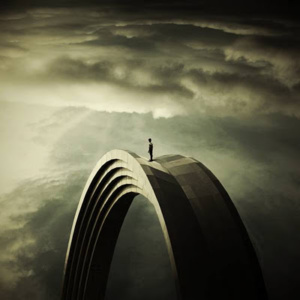
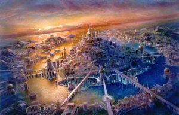

Učenci ved Nobenega pravega učenca ne zanimajo (iz radovednosti ali drugih naklepov) posli drugih ljudi, razen takrat, ko gre za to, da bi jim pomagal, in da ima pred seboj vedno le svoj lastni svet dela, ki ga mora opraviti, ne bi bili tako brezupno oddaljeni od razumevanja dejstev širšega življenja izurjenega jasnovidca. Celo iz tega malo, kar sem povedal v zvezi z omejitvami, ki jih ima pred sabo učenec, je očitno, da bo v številnih primerih vedel precej več kot lahko pove. To seveda v še širšem smislu velja za velike Mojstre Modrosti same, in to je razlog, zakaj imajo tisti, ki imajo privilegij, da občasno vstopijo z njimi v stik, takšno spoštovanje do njihovih besed o temah, ki se morda ne tičejo neposrednega učenja. Kajti mnenje učitelja, ali celo enega od njegovih višjih učencev, o kateri koli temi, je mnenje človeka, katerega zmožnost natančne presoje je neprimerljivo večja od naše. Njegov položaj in njegove razširjene sposobnosti so dejansko dediščina celotnega človeštva, in čeprav smo dandanes lahko še precej oddaljeni od teh veličastnih moči, pa bodo te nekega dne vseeno v naši posesti. In kako drugačen kraj bo ta stari svet tedaj, ko bo človeštvo kot celota posedovalo višjo jasnovidnost! Pomislite na to, kako drugačna bo zgodovina, ko bodo lahko vsi brali njene zapise; kaj bo to pomenilo za znanost, ko bo mogoče vse procese, o katerih lahko sedaj le teoretizira, spremljati skozi ves njihov tok; za medicino, ko bodo tako zdravniki kot pacienti lahko jasno in natančno videli, kaj je mogoče narediti; za filozofijo, ko ne bo več možnosti za razpravo o njeni osnovi, ker bodo lahko vsi videli širši vidik resnice; za delo, ko bo to le veselje, ker bo vsak človek delal le tisto, kar lahko najbolje opravi; za vzgojo, ker bodo umi in srca otrok odprta za učitelja, ki skuša oblikovati njihov značaj; za religijo, ker ne bo več možnosti za prepir o njenih dogmah, saj bo resnica o stanjih po smrti in Velikem Zakonu, ki vlada svetu, dostopna vsem očem.Predvsem pa, kako bo v tistih precej bolj svobodnih razmerah razviti človek veliko lažje nudil pomoč drugemu. Možnosti, ki se odpirajo pred umom so tako veličastne v vseh smereh, tako da bo moral biti naš sedmi obhod resnično zlata doba. In dobro je, da te velike sposobnosti ne bo posedovalo celotno človeštvo, dokler ne bo razvilo precej višjega nivoja, tako moralnosti kot modrosti, kajti sicer bi še enkrat in še v slabših pogojih zgolj ponovili tisti strahoten padec Atlantidske civilizacije, katere pripadniki niso uspeli dojeti, da povečana moč pomeni tudi povečano odgovornost. Pa vendar je večina od nas bila med tistimi ljudmi; upajmo, da smo se nekaj naučili iz tistega neuspeha in da se bomo, ko se bodo pred nami znova odprle možnosti širšega življenja, bolje soočili s preizkusom.

C. W. Leadbeater Jasnovidnost KAJ JE JASNOVIDNOST? Odlomki ← Nazaj na članke